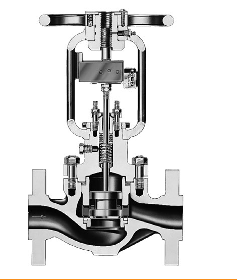
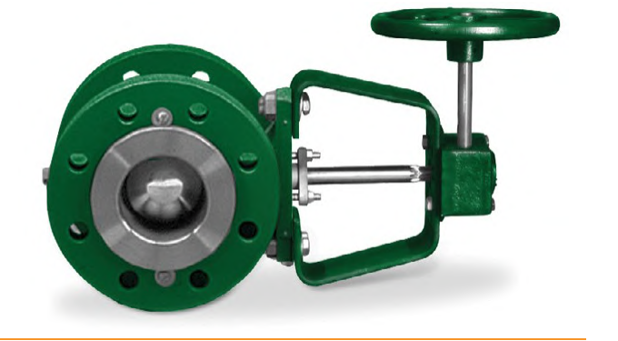

Manual Actuators — Sliding-Stem vs. Rotary
Sliding-Stem

For globe-style valves — often actuates the bypass valve in a three-valve bypass loop, for manual process control during maintenance or shutdown of the automatic loop.
Rotary

Same role, for rotary valves. Some models of either add a dial-indicating device for accurate plug or disk repositioning.
After Control Valve Handbook, 6th ed., Figs. 3.48 & 3.49 — used directly. Component Index: cvh-cmp-manual-actuator-sliding-stem, cvh-cmp-manual-actuator-rotary.